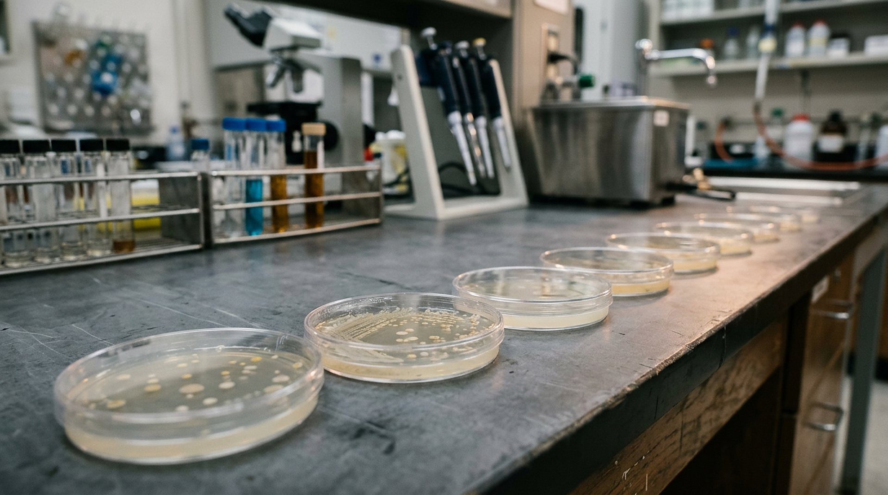

C’est la salle la plus honnête du musée. On y pose une seule question — hasard ou conception ? — et l’on commence par dire ce que la science ne peut pas faire.
Faits établisPoints débattusRéflexion signalée
La cible peinte après le tir : le raisonnement que ce musée refuse — y compris quand il le sert.
Crédit : Illustration générée pour CREATIO · Licence : Usage interne au site
Vingt salles ont montré des mesures. Celle-ci ne mesure plus rien : elle explique la méthode, les pièges de raisonnement, et pourquoi aucune expérience ne départage deux lectures des mêmes faits. Le musée y expose sa propre position, et la remet entre les mains du visiteur.
Textes bibliques cités
« Ses qualités invisibles se discernent, depuis la création du monde, par les choses faites. »
Romains 1:20
Le verset pilier du musée. Paul ne dit pas que la création démontre : il dit qu’elle donne à voir.
« Les cieux proclament la gloire de Dieu. »
Psaume 19:1
Une proclamation, dans le registre du chant — pas celui de la preuve.
« La gloire de Dieu, c’est de celer une chose ; la gloire des rois, c’est de l’explorer. »
Proverbes 25:2
Chercher est honoré ; trouver entièrement ne l’est pas promis.
M1
Le hasard n’est pas l’absence de règles
Dans l’expérience de longue durée de Lenski, douze populations identiques d’E. coli ont accumulé des milliards de mutations sans acquérir l’usage du citrate pendant plus de 30 000 générations. Une seule lignée l’a acquis, vers 31 500 générations. Le résultat illustre la contingence historique : l’innovation dépend d’événements antérieurs précis, pas d’un tirage indépendant.

Trente mille générations, douze lignées, une seule innovation.
Crédit : Illustration générée pour CREATIO · Licence : Usage interne au site
≈ 31 500générations avant l’innovation, sur une seule des douze lignées
Douze populations d’E. coli ont évolué plus de 30 000 générations avant que l’une d’elles n’acquière l’usage du citrate : l’apparition d’une innovation est contingente, sa sélection ne l’est pas.
Une innovation attendue très longtemps, puis apparue une seule fois sur douze lignées : l’histoire compte autant que le tri.
Nuance
Ce résultat illustre la **contingence historique**, pas l’absence de sélection. Il ne dit ni que tout est hasard, ni que tout est orienté : il montre que l’ordre d’arrivée des événements change le résultat.
M2
« Hasard » a plusieurs sens
En biologie, on distingue au moins trois choses : les mutations, qui ne sont pas orientées vers un besoin ; la sélection, qui n’est pas aléatoire ; et les contraintes physiques, qui réduisent fortement le champ des possibles. Confondre ces trois sens fabrique des débats stériles.
3sens distincts du mot « hasard » en biologie de l’évolution
« Hasard » ne signifie pas « sans règles » : mutations non orientées, sélection non aléatoire et contraintes physiques sont trois notions distinctes.
Un tirage au sort suivi d’un tri serré : l’aléatoire produit la diversité, la sélection la réduit.
Nuance
L’analyse classique citée (Monod, 1970) est un essai philosophique, non une expérience : elle est présentée comme une lecture, discutée depuis. Le musée ne la transforme pas en résultat.
M3
Ce que la science ne peut pas faire
L’Académie nationale des sciences des États-Unis l’écrit noir sur blanc : les entités surnaturelles ne peuvent pas être étudiées par la science. Conséquence directe, et inconfortable pour ce musée : une affirmation sur l’action de Dieu n’est pas un résultat scientifique.
2008position méthodologique de la NAS sur les limites de la science
La science ne peut pas étudier les entités surnaturelles : une affirmation sur une action divine n’est pas un résultat scientifique, quel que soit le camp qui la formule.
La science mesure le monde naturel ; elle ne peut ni confirmer ni infirmer ce qui, par définition, lui échappe.
Nuance
C’est le point d’honnêteté central de la salle — et du musée entier. Le site en tire la conséquence : sa thèse est une **lecture**, non une démonstration. Il l’écrit, même si cela affaiblit son apparence d’argumentaire.
M4
Le principe anthropique
Formulé par Carter en 1974 : ce que nous pouvons observer doit être compatible avec l’existence d’observateurs. Un univers où personne ne pourrait exister ne serait observé par personne. Le principe contraint l’interprétation — mais il ne prédit rien, et il ne tranche rien.
Deux lectures en équilibre : la salle ne fait pencher le plateau dans aucun sens.
Crédit : Illustration générée pour CREATIO · Licence : Usage interne au site
1974énoncé du principe anthropique
Nos observations doivent être compatibles avec l’existence d’observateurs : cela contraint l’interprétation de l’ajustement, sans fournir de prédiction.
Nous ne pouvons observer que les univers où quelqu’un peut observer — ce qui n’explique pas pourquoi celui-ci existe.
Nuance
Le principe peut servir **dans les deux sens** : ajustement voulu, ou sélection d’univers. C’est exactement pourquoi le musée ne l’utilise pas comme preuve.
M5
Notre intuition des probabilités est mauvaise
Depuis les travaux de Tversky et Kahneman (1974), on sait que les jugements intuitifs de probabilité s’écartent systématiquement du calcul. Notre esprit se trompe sur les très petits et les très grands nombres : les « probabilités impossibles » assénées dans les débats doivent donc être vérifiées, pas ressenties.
1974mise en évidence des biais de jugement probabiliste
Les jugements intuitifs de probabilité s’écartent systématiquement du calcul, en particulier pour les très petites et très grandes valeurs.
Notre esprit est un excellent détecteur de causes et un très mauvais calculateur de probabilités — précisément ce qu’exige ce débat.
Nuance
Cette règle vaut **pour les deux camps** : pour les calculs de « hasard improbable » comme pour l’argument inverse. Le musée l’écrit symétriquement, et l’applique d’abord à lui-même.
M6
L’ajustement, dans sa formulation exacte
L’ajustement des constantes existe dans une formulation précise, celle d’Oberhummer et al. (2000) : hors d’une fenêtre d’environ 0,5 % pour la force forte et 4 % pour la force électromagnétique, la production de carbone **ou** d’oxygène chute d’un facteur 30 à 1 000. C’est une fenêtre étroite — mais une fenêtre, pas un « réglage à 0,5 % près ».
0,5 % / 4 %largeur de fenêtre pour la force forte / électromagnétique (facteur 30 à 1 000)
Hors d’une fenêtre d’environ 0,5 % (force forte) et 4 % (force électromagnétique), la production stellaire de carbone ou d’oxygène chute d’un facteur 30 à 1 000.
Une fenêtre étroite, dans laquelle nous nous trouvons — et dont l’étroitesse n’indique pas, à elle seule, qui l’a découpée.
Nuance
Formulation imposée par la salle 02 du musée : c’est la seule autorisée. Toute version du type « réglé à 0,5 % près » est refusée, parce qu’elle confond la largeur d’une fenêtre avec une précision de réglage.
M7
Deux lectures, un même paysage
Sur les mêmes faits, deux lectures peuvent coexister : l’une s’arrête aux mécanismes naturels, l’autre y voit l’action d’une intelligence. Aucune expérience ne les départage, et aucune des deux ne peut se prévaloir d’un résultat scientifique supérieur.
Un même paysage, deux lectures — et aucune expérience pour les départager.
Crédit : Illustration générée pour CREATIO · Licence : Usage interne au site
2lectures des mêmes données, non départageables par l’expérience
Deux lectures des mêmes faits — mécanismes naturels seuls, ou action d’une intelligence — coexistent sans qu’aucune expérience ne les départage.
Deux personnes devant le même paysage : l’une voit de la géologie, l’autre une intention.
Nuance
Le musée n’écrit jamais que la seconde lecture est « plus scientifique », ni qu’elle est « irrationnelle ». Il explique **pourquoi** le débat ne se tranche pas par une mesure — et laisse la conclusion au visiteur.
Ce que la science dit honnêtement
Les limites, dites franchement
La science ne conclut pas à une conception
Elle décrit des mécanismes ; elle n’a pas de méthode pour détecter une intention hors nature. Le musée l’affirme, sources à l’appui, quitte à affaiblir son propre argumentaire d’apparence. C’est le prix de l’honnêteté.
Les arguments de probabilité sont fragiles
Calculer la probabilité « après coup » d’un événement déjà survenu est un raisonnement classiquement critiqué : le tireur qui tire, puis peint la cible autour de l’impact. Le musée refuse ce procédé — dans son propre camp d’abord.
Le piège de la lacune
Chaque fois que la science explique un mécanisme, un argument qui reposait sur son ignorance s’effondre. Ce musée ne bâtit donc **rien** sur une ignorance actuelle : il ne dit jamais « on ne sait pas, donc… ». Et il refuse aussi la conclusion inverse — qu’un mécanisme décrit exclurait une intention.
Réflexion — et non mesure
Lecture proposée
Un musée qui veut être honnête doit dire ceci, même si cela le dessert en apparence : rien, dans une expérience, ne permet de départager « mécanisme naturel » et « action d’une intelligence ». La science décrit comment les choses fonctionnent ; elle ne dit pas **qui**, le cas échéant, les voulait. Ce que le visiteur peut faire, c’est autre chose : parcourir vingt-deux salles, comparer ce qui est mesuré et ce qui est supposé, puis se demander si tant de réglages, de constantes, de structures et de capacités relèvent du hasard aveugle ou d’une intention. « Ses qualités invisibles se discernent par les choses faites » : Paul ne dit pas que la création démontre ; il dit qu’elle donne à voir. C’est exactement la position de ce musée : il montre, il met en ordre, et il laisse la conclusion au visiteur.
« Depuis la création du monde, ses qualités invisibles se discernent par les choses faites. »
Romains 1:20
Questions honnêtes
Les objections, prises au sérieux
« Pourquoi ne dites-vous pas que la science prouve la création ? »
Parce qu’elle ne le fait pas, et parce qu’une preuve annoncée à tort se retourne contre celui qui l’annonce. Le musée préfère une position plus modeste et plus solide.
« Inversement, la science ne prouve-t-elle pas qu’il n’y a pas de Créateur ? »
Non. Un mécanisme décrit n’exclut pas une intention : expliquer comment une montre fonctionne ne dit rien sur l’existence d’un horloger — et ne pas le voir ne prouve pas qu’il n’y en a pas.
« L’ajustement fin est-il un argument solide ? »
Dans sa formulation exacte (0,5 % / 4 %, facteur 30 à 1 000), c’est un fait remarquable. L’interprétation — intention, multivers, nécessité — reste discutée : le musée présente les trois pistes, sans conclure.
« Et le hasard ? »
Le mot couvre des réalités différentes : mutations non orientées, tirages, indéterminisme quantique, simple ignorance. Confondre ces sens fabrique des débats stériles — raison pour laquelle la salle commence par les distinguer.
« Que faut-il conclure ? »
Rien d’obligatoire. Le musée propose une lecture, il ne l’impose pas. Un visiteur qui repart avec la question intacte, mais mieux informée, a retiré de cette salle exactement ce qu’elle pouvait donner.
Ce que l’on pourra manipuler
Interactions de la salle
Chaque interaction possède un repli lisible sans JavaScript.
Interaction
Contenu
Repli
Le tireur et la cible
Une démonstration interactive de l’erreur « après coup » : le visiteur place une cible après le tir et voit la « probabilité » devenir ridicule — puis applique la leçon aux arguments des deux camps, y compris à ceux qui servent la thèse du musée.
L’explication du raisonnement, en trois phrases, et deux exemples chiffrés de probabilités calculées après coup.
Trois explications de l’ajustement
Un curseur de constante et trois panneaux : intention, multivers, nécessité. Textes sourcés, aucune conclusion imposée — le visiteur lit les trois.
Les trois interprétations en texte, avec ce que chacune explique et ce qu’elle ne règle pas.
Bac à sable de Lenski
Douze lignées simulées sur 30 000 générations accélérées : l’innovation apparaît rarement et tardivement. Compteur de mutations, aucune finalité affichée.
Le résultat de l’expérience réelle, avec le chiffre des générations et la source.
« Qui peut trancher ? »
Un tableau à deux colonnes — ce que la science peut tester / ce qu’elle ne peut pas — que le visiteur remplit avant de voir la correction, appuyée sur la position de l’Académie nationale des sciences.
Les deux colonnes remplies, en texte, avec la citation de la NAS.
Verdict personnel
À la fin, le visiteur choisit une position : mécanismes seuls, intention, ou indécision. Le site affiche respectueusement les arguments de chaque option, sans score, sans jugement, et sans enregistrer le choix.
Les trois positions et leurs arguments, présentés à égalité de considération.